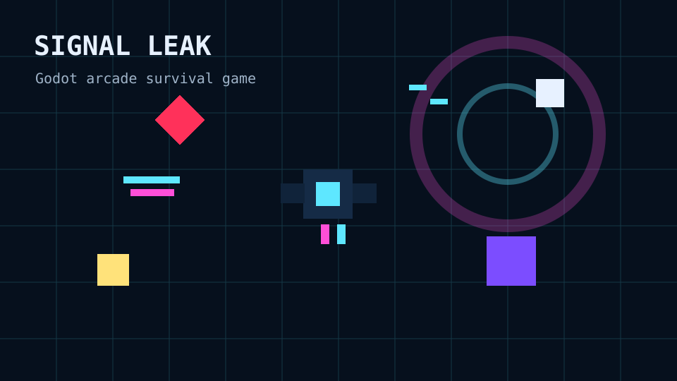
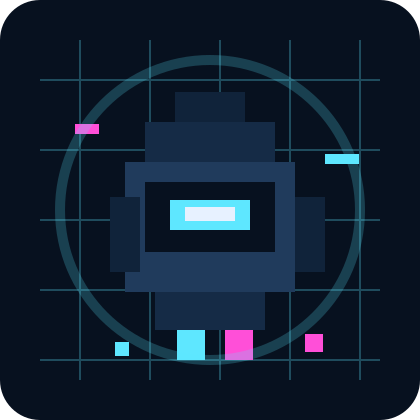
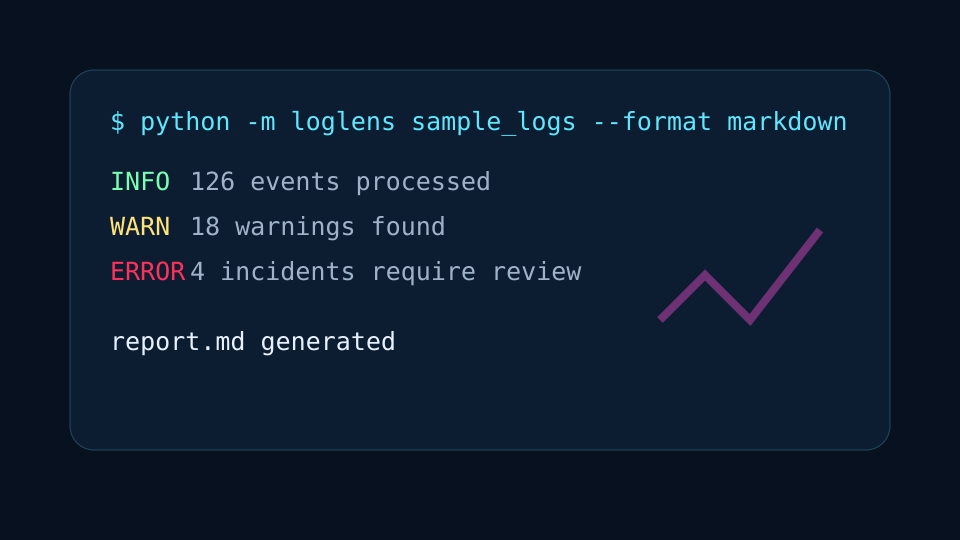
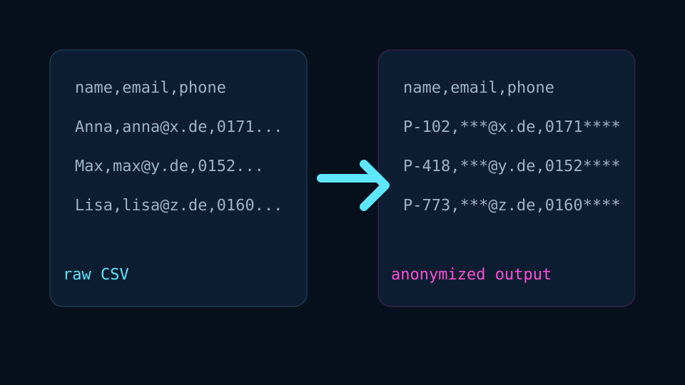
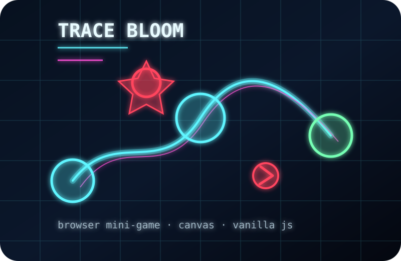

Godot 4GDScriptGame systems
Signal Leak
A top-down arcade survival game with enemy archetypes, stacked weapon upgrades, procedural audio, local highscores, and Windows export support.
Junior Software Developer · Germany
<<<<<<< HEAD I am a Fachinformatiker für Anwendungsentwicklung focused on Python tooling, database interfaces, browser mini-games, Godot game projects, and small applications that are easy to understand, ======= I am a Software Engineer focused on Python tooling, database interfaces, game projects, and small applications that are easy to understand, >>>>>>> 8353236e2a4513e0b97ca2d33d0046ecf074e3ba run, and document.

Selected work
Small but complete projects that show code structure, technical decisions, and deliverable results — including a browser game you can play directly on this website.

A top-down arcade survival game with enemy archetypes, stacked weapon upgrades, procedural audio, local highscores, and Windows export support.

A lightweight Python command-line tool for scanning application logs and producing Markdown or JSON incident reports.

A data-privacy oriented tool concept for anonymizing CSV files with masking, pseudonymization, configurable profiles, and audit logging.

A lightweight browser mini-game that runs directly on the website. Stabilize leaking signal nodes by drawing a live neon trace through a corrupted network.
Technical profile
Python, Java, JavaScript, TypeScript, GDScript, SQL
Git, GitHub, Godot 4, Docker basics, VS Code, JetBrains TeamCity, Fusion 360, Windows, macOS
SQL, MongoDB, Redis, Qdrant, CSV processing, REST/API interfaces, log/report generation
LangChain, runnable demos, clean README files, release notes, basic tests, architecture documentation
About
I like building projects that someone can actually run: command-line tools with examples, small games with release builds, and data-focused applications with clear documentation. My background includes application development training, database/interface work, Python tooling, and customer-facing work experience outside of IT.
This portfolio is intentionally simple: no heavy framework, no build step, and no dependency chain. The goal is to make my work easy to inspect and easy to test.
Contact
I am open to junior developer opportunities, feedback, and practical software projects.